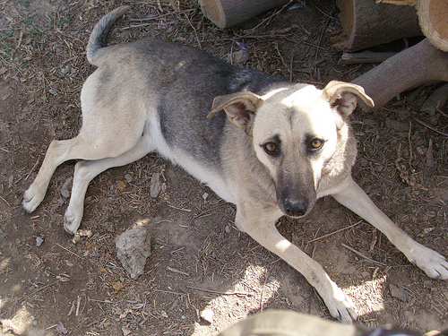
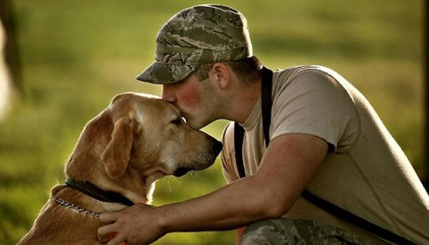
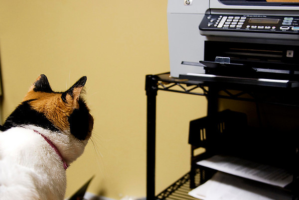
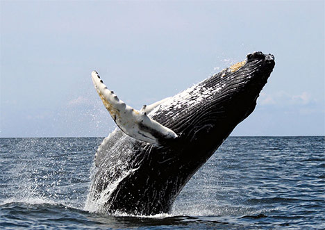

 |
Sara: Guardian of her Troop!
Its a short but sweet story. Sara is our patrol dog that follows our platoon on every patrol. She originally came from saraposa prison, which is where we patrol daily, she followed us to our tiny COB, and has lived here ever since, and goes on every patrol with us ever since too. She's so sweet and loving and looks out for us and protects us, we all love her, my whole heartbreaker platoon. I hope we can get her to the states.Read more.. |
 |
Stress is for Everyone!
It’s well known that post-traumatic stress is one of the major problems facing many veterans returning from the wars in Iraq and Afghanistan. But now researchers are finding that a large number of military dogs may be grappling with the condition as well. By some estimates, more than 5 percent of the roughly 650 military dogs deployed by American combat forces are coming down with what researchers call canine PTSD, reports James Dao in The New York Times.Read more.. |
 |
Crazed Cat Fax
We have a client who tells stories about her cat being addicted to the fax machine. Apparently her husband works from home – the cat slowly learned the sound of the fax machine and that after it beeped it would feed out a fax. The cat started coming when the fax beeped and grabbing the fax and running through the house with it (away from her husband who would occassionally be chasing for an important document). He would then proceed to shred the fax to little pieces.Read more.. |
 |
Watching Whale Protections at Work
As an environmental lawyer in Washington, D.C., much of my work involves the often invisible world of policy, laws, and court decisions. Every now and again, however, I have the incredible privilege of getting out to see the wildlife I work to protect. This past weekend, I got to do just that on a whale watching trip in one of the most important whale habitats on the East Coast of the United States—the waters off of Cape Cod, Massachusetts.Read more.. |
|
|